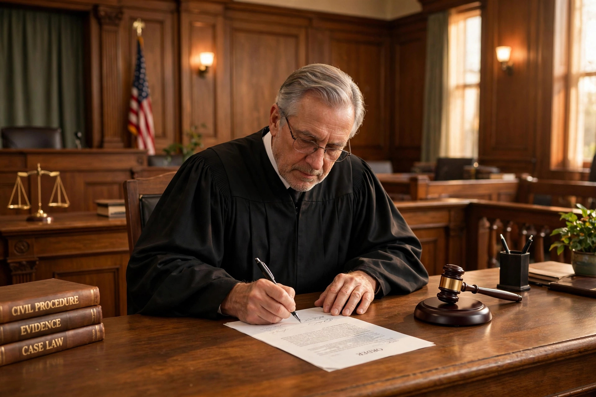

From Wikipedia, the free encyclopedia
| Good-faith exception | |
|---|---|
| Type | Exception to the exclusionary rule |
| Established | United States v. Leon; Massachusetts v. Sheppard (1984) |
| Extended | Arizona v. Evans (1995); Herring v. United States (2009); Davis v. Washington (2011) |
| Area | Fourth Amendment criminal procedure |

The good-faith exception is a doctrine of United States criminal procedure under which evidence obtained by police officers who reasonably rely on a search warrant that later proves defective—or on other apparently valid legal authority—is admissible at trial even though the search violated the Fourth Amendment. It is the best-known exception to the exclusionary rule.
The Supreme Court created the exception in United States v. Leon (1984), reasoning that the exclusionary rule exists to deter police misconduct, and excluding evidence obtained in objective good faith would not serve that purpose when the error was made by a magistrate rather than by officers. The companion case Massachusetts v. Sheppard applied the same reasoning to a warrant with a clerical defect.
Good faith does not save a search where the magistrate was misled by information the officer knew or should have known was false, where the magistrate wholly abandoned the judicial role, where the warrant application was so lacking in probable cause that reliance was unreasonable, or where the warrant was so facially deficient—for example, failing to state what was to be seized—that officers could not reasonably presume it valid.
The Court later extended the exception to reliance on erroneous court-clerk records (Arizona v. Evans, 1995), negligent police record-keeping errors (Herring v. United States, 2009), reliance on binding appellate precedent (Davis v. Washington, 2011), and isolated negligence rather than systemic or reckless misconduct. Critics argue the extensions have substantially narrowed the exclusionary rule; defenders contend they focus the remedy on culpable police behavior.